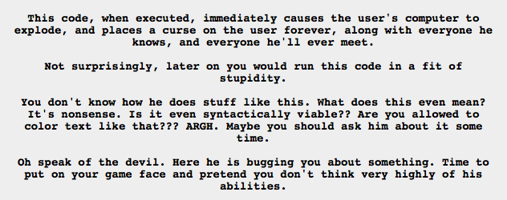

Soooo Jane’s copy of Sburb has a ~ATH file type. Which looking at this is kind of terrible. Karkat ran that virus and believed it to be the curse that basically fucked over all of the trolls and their entire session. Everything about coding goes over my head, but now I know that there are two universes, and one is red and the other is blue, and they have both recently died. Jane is about to execute a ~ATH file, and her computer explodes, sooooooo.
Also that virus Sollux had is the one that summons Lord English! Holy shit. The subprogram is Lord English. It makes so much sense. He shows up at the end of the universe, but he’s been there all the time, just waiting to be executed. And he’s a virus, since he’s been living inside Doc Scratch, while Doc Scratch plays the good host.
Ooooh such fun!